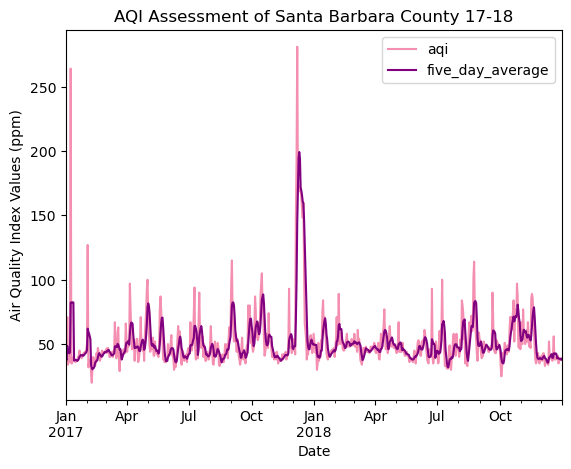
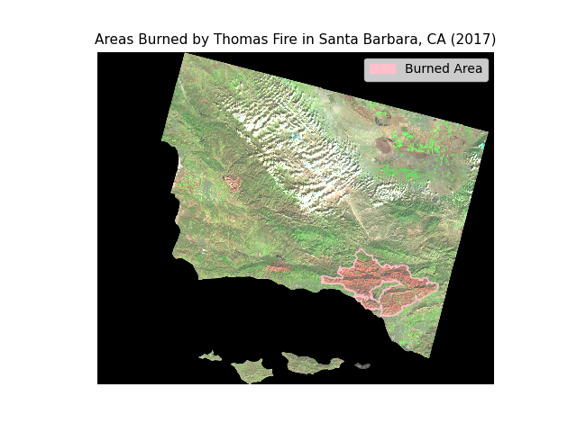
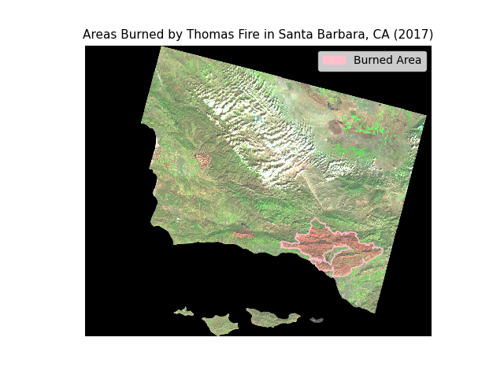

Investigation on the Thomas Fire Impacts in Santa Barbara County, CA (2017 - 2018)
Author: Sofia Ingersoll
On December 4, 2017, the Thomas Fire swept throughout Ventura and Santa Barbara County, CA for 40 days, devistating a total of 281,893 acres; destroying 1,063 structures and claiming two casualties (one civilian and one firefighter). Investigations have found that this wildfire was the result of a “line slap,” shared between Southern California Edison powerlines during a high wind event that sparked hot materials which ignited a nearby fuel bed Ventura County Fire Department.
We are curious about the environmental and health impacts within Santa Barbara County that resulted because of the Thomas Fire. Our investigation will be exploring the Air Quality Index of SB county between 2017/01 - 2018/10. We aim to visualize the fluxuation in particular matter in correspondence to the Thomas Fire using the average over a 5 day rolling window.
Additionally, we’re interested in the burn scars remainig within SB County. To assess the environmental damages within the county, we will create a false color image using a simplified collection of bands (red, green, blue, near-infrared and shortwave infrared) from the Landsat Collection 2 Level-2 atmosperically corrected surface reflectance data, gathered by the Landsat 8 satellite.
For our false color imagine, the data was accessed and pre-processed in the Microsoft Planetary Computer to remove data outside land and coarsen the spatial resolution (Landsat Collection in MPC).
Citation: Microsoft Planetary Computer. Planetary Computer. (n.d.). https://planetarycomputer.microsoft.com/dataset/landsat-c2-l2
This data should be used for visualization purposes only.
Citation: California fire perimeters (all). California State Geoportal. (n.d.). https://gis.data.ca.gov/datasets/CALFIRE-Forestry::california-fire-perimeters-all-1/about
Summary Code
# Reading in Librariesimport pandas as pd import matplotlib.pyplot as plt#-----------------------------------# Reading in the dataaqi_17 = pd.read_csv('https://aqs.epa.gov/aqsweb/airdata/daily_aqi_by_county_2017.zip') aqi_18 = pd.read_csv('https://aqs.epa.gov/aqsweb/airdata/daily_aqi_by_county_2018.zip') #-----------------------------------# Updating data sets for plottingaqi = pd.concat([aqi_17, aqi_18]) # glueing the datasets togetheraqi.columns = aqi.columns.str.lower().str.replace(' ','_') # aqi.columns = aqi.columns.str.replace(' ','_') to replace the space for _ aqi_sb = aqi.loc[aqi.county_name =='Santa Barbara'] # selecting SB countyaqi_sb = aqi_sb.iloc[:, 4:] # isolating desired columnsaqi_sb.date = pd.to_datetime(aqi_sb.date) # converting the date type to datetimes64aqi_sb = aqi_sb.set_index('date') # updating the index to the data columnaqi_sb['five_day_average'] = aqi_sb.aqi.rolling('5D').mean() # provides rolling window calculations of the mean aqi over 5 day periods # get a pd.Series as ouputcolors = {'aqi':'#F48FB1', # creates a stored object for the y-variables of interest associated to specific colors'five_day_average':'purple'}aqi_sb.plot(y = ['aqi','five_day_average'], # calls specific columns of interest to plot color = colors, # calls object of assigned colors for y-values title='AQI Assessment of Santa Barbara County 17-18', # adds title xlabel='Date', # adds x-axis label ylabel='Air Quality Index Values (ppm)'# adds y-axis label )# a spike in air pollutants from the Thomas fire is observed between Dec. '17 and Jan '18' #-----------------------------------------------------------------------------# Reading in libraries and functionsimport osimport numpy as npimport pandas as pdimport geopandas as gpdimport xarray as xrimport rioxarray as rioxrimport rasteriofrom shapely.geometry import Polygonimport matplotlib.pyplot as pltimport matplotlib.patches as mpatches#-----------------------------------# Reading in the datalandsat = rioxr.open_rasterio(os.path.join(os.getcwd(), 'data','landsat8-2018-01-26-sb-simplified.nc')) ca = gpd.read_file('data/California_Fire_Perimeters_2017.shp')#-----------------------------------# Updating landsat data for plottinglandsat = landsat.squeeze() # remove length 1 dimension (band)landsat = landsat.drop('band') # remove coordinates associated to bandfalse_colors = landsat[['swir22','nir08','red']].to_array() # subsetting the bands for the false color image as an array#------------------------------------# Updating CA fire boundary data for plottingca = ca.to_crs(landsat.rio.crs) # Update CRS to match and checkthomas_fire = ca[ca['FIRE_NAME'] =='THOMAS'] # subsetting for the Thomas Fire#------------------------------------# Plotting the Thomas Fire burned areas of Santa Barbarafig, ax = plt.subplots() # creates figure for plottingplt.axis('off') # removes plot axesfalse_colors.plot.imshow(ax = ax, # plots false color bands robust =True) # includes colorsthomas_fire.plot(ax = ax, # plots thomas fire burn area color ='none', # no color of burn area edgecolor ='pink') # opacity of edgecolorfire_scar = mpatches.Patch(color ='pink', label ='Burned Area') # Add a figure legendax.legend(handles=[fire_scar])ax.set_title('Areas Burned by Thomas Fire in Santa Barbara, CA (2017)', fontsize =11) # Adds title
Text(0.5, 1.0, 'Areas Burned by Thomas Fire in Santa Barbara, CA (2017)')
Loading Libraries and Functions
# Reading in libraries and functionsimport osimport numpy as npimport pandas as pdimport geopandas as gpdimport xarray as xrimport rioxarray as rioxrimport rasteriofrom shapely.geometry import Polygonimport matplotlib.pyplot as pltimport matplotlib.patches as mpatches
Reading in the Data for AQI
# Reading in the dataaqi_17 = pd.read_csv('https://aqs.epa.gov/aqsweb/airdata/daily_aqi_by_county_2017.zip') aqi_18 = pd.read_csv('https://aqs.epa.gov/aqsweb/airdata/daily_aqi_by_county_2018.zip')
Preliminary exploration
Below we’re going to explore the dtypes of our columns and inspect for any issues that may require a little wrangling. We can see that our Date column is not stored as a datetime64, this would cause us greatly difficulty when trying to visualize trends over time. Additionally, the column names and structure pose potential issues, so we’ll need to correct those as well.
# inital data insightaqi_17.info()
<class 'pandas.core.frame.DataFrame'>
RangeIndex: 326801 entries, 0 to 326800
Data columns (total 10 columns):
# Column Non-Null Count Dtype
--- ------ -------------- -----
0 State Name 326801 non-null object
1 county Name 326801 non-null object
2 State Code 326801 non-null int64
3 County Code 326801 non-null int64
4 Date 326801 non-null object
5 AQI 326801 non-null int64
6 Category 326801 non-null object
7 Defining Parameter 326801 non-null object
8 Defining Site 326801 non-null object
9 Number of Sites Reporting 326801 non-null int64
dtypes: int64(4), object(6)
memory usage: 24.9+ MB
aqi_18.info()
<class 'pandas.core.frame.DataFrame'>
RangeIndex: 327537 entries, 0 to 327536
Data columns (total 10 columns):
# Column Non-Null Count Dtype
--- ------ -------------- -----
0 State Name 327537 non-null object
1 county Name 327537 non-null object
2 State Code 327537 non-null int64
3 County Code 327537 non-null int64
4 Date 327537 non-null object
5 AQI 327537 non-null int64
6 Category 327537 non-null object
7 Defining Parameter 327537 non-null object
8 Defining Site 327537 non-null object
9 Number of Sites Reporting 327537 non-null int64
dtypes: int64(4), object(6)
memory usage: 25.0+ MB
Cleaning & Wrangling AQI Data
To simplify our workflow, we’re going to combine the 2017 and 2018 data sets, and wrangle a single concatonated dataset.
# glueing the datasets togetheraqi = pd.concat([aqi_17, aqi_18]) # .str.replace(' ','_') to replace the space for _aqi.columns = aqi.columns.str.lower().str.replace(' ','_')
Check-point
Is everything looking as we expect it to?
# checking that dataframes joined properly and column names changedprint('The number of aqi observations in 2017 were:', len(aqi_17.Date))print('The number of aqi observations in 2018 were:', len(aqi_18.Date))print('The number of aqi observations between 2017-2018 were:', len(aqi.date)) # checking data frame column names
The number of aqi observations in 2017 were: 326801
The number of aqi observations in 2018 were: 327537
The number of aqi observations between 2017-2018 were: 654338
Subsetting, Datetime Indexing, & Rolling Window Mean Calculations
Now that we have one dataset, we can select our region of interest (ROI), correct the Date dtype so it may be used as theindex, and calculate the average Air Quality Index over a 5 day rolling window.
# Datetime Indexingaqi_sb.date = pd.to_datetime(aqi_sb.date) # converting the date type to datetimes64aqi_sb = aqi_sb.set_index('date') # updating the index to the data column
rolling().mean() for a 5 Day Window
# Rolling Window Mean Calcaqi_sb['five_day_average'] = aqi_sb.aqi.rolling('5D').mean() # provides rolling window calculations of the mean aqi over 5 day periods
AQI Visualization
Scatter Plot of 5 Day Average AQI Assessment, Santa Barbara County (Jan 2017 - Oct 2018)
The visual below displays the mean AQI over a 5 day rolling window between January 2017 and October 2018. A spike in air pollutants between the months of December 2017 and January 2018 is clearly observed, indicating negative effects on air quality resulting from the Thomas Fire.
# Create a color palettecolors = {'aqi':'#F48FB1', # creates a stored object for the y-variables of interest associated to specific colors'five_day_average':'purple'}# Creating a scatter plotaqi_sb.plot(y = ['aqi','five_day_average'], # calls specific columns of interest to plot color = colors, # calls object of assigned colors for y-values title='AQI Assessment of Santa Barbara County 17-18', # adds title xlabel='Date', # adds x-axis label ylabel='Air Quality Index Values (ppm)'# adds y-axis label )plt.show()# a spike in air pollutants from the Thomas fire is observed between Dec. '17 and Jan '18'

Reading in the Data for Landsat
# Reading in the datalandsat = rioxr.open_rasterio(os.path.join(os.getcwd(), 'data','landsat8-2018-01-26-sb-simplified.nc')) ca_fire = gpd.read_file('data/California_Fire_Perimeters_2017.shp')
In order to create a false color image, we need to adjust the dimensions of our data to only consider x and y coordinates. Furthermore, we will need to create an array containing the false color bands we intend on utilizing for our ROI. We’ll also be correcting the CRS so we can overlay the two datasets.
Removing Unwanted Dimensions with squeeze() & drop()
# Updating landsat data for plotting# original dimensions and coordinates show us that band is a dimensionprint(landsat.dims, landsat.coords,'\n')# remove length 1 dimension (band)landsat = landsat.squeeze()print(landsat.dims, landsat.coords,'\n')# remove coordinates associated to bandlandsat = landsat.drop('band')print(landsat.dims, landsat.coords)
false_colors = landsat[['swir22','nir08','red']].to_array() # subsetting the bands for the false color image as an array# Plotting true color landsatfig, ax = plt.subplots()false_colors.plot.imshow(robust =True)
<matplotlib.image.AxesImage at 0x7f2603fc4220>
CRS Transformation with to_crs()
ca_fire = ca_fire.to_crs(landsat.rio.crs) # Update CRS to match and checkprint('CA Fire Boundary CRS: ', ca.crs)
CA Fire Boundary CRS: PROJCS["WGS 84 / UTM zone 11N",GEOGCS["WGS 84",DATUM["WGS_1984",SPHEROID["WGS 84",6378137,298.257223563]],PRIMEM["Greenwich",0],UNIT["degree",0.0174532925199433,AUTHORITY["EPSG","9122"]],AUTHORITY["EPSG","4326"]],PROJECTION["Transverse_Mercator"],PARAMETER["latitude_of_origin",0],PARAMETER["central_meridian",-117],PARAMETER["scale_factor",0.9996],PARAMETER["false_easting",500000],PARAMETER["false_northing",0],UNIT["metre",1],AXIS["Easting",EAST],AXIS["Northing",NORTH],AUTHORITY["EPSG","32611"]]
Subset for Thomas Fire Burn Areas
# Updating CA fire boundary data for plottingthomas_fire = ca_fire[ca_fire['FIRE_NAME'] =='THOMAS'] # subsetting for the Thomas Fire# Visualize the subset to confirm it properly filteredfig, ax = plt.subplots()thomas_fire.plot(ax = ax, color ='hotpink')plt.axis('off')
Thomas Fire Burned Areas in Santa Barbara County (2017)
Our false color image displays an outline of the fire scorn area of Santa Barbara County. Here, we can observe the severity of the damage by generally visualizing the area and the types of regions impacted by the wildfire.
# Plotting the Thomas Fire burned areas of Santa Barbaraplt.figure().set_figheight(2)fig, ax = plt.subplots() # creates figure for plottingplt.axis('off') # removes plot axesfalse_colors.plot.imshow(ax = ax, # plots false color bands robust =True)# includes colorsthomas_fire.plot(ax = ax, # plots thomas fire burn area color ='none', # color of burn area edgecolor ='pink') # opacity of edgecolorfire_scar = mpatches.Patch(color ='pink', label ='Burned Area') # Add a figure legendax.legend(handles=[fire_scar])ax.set_title('Areas Burned by Thomas Fire in Santa Barbara, CA (2017)', fontsize =11) # Adds title
Text(0.5, 1.0, 'Areas Burned by Thomas Fire in Santa Barbara, CA (2017)')
VCFD determines cause of The thomas fire. Ventura County Fire Department. (2019, March 13). https://vcfd.org/news/vcfd-determines-cause-of-the-thomas-fire/
Microsoft Planetary Computer. Planetary Computer. (n.d.). https://planetarycomputer.microsoft.com/dataset/landsat-c2-l2
California fire perimeters (all). California State Geoportal. (n.d.). https://gis.data.ca.gov/datasets/CALFIRE-Forestry::california-fire-perimeters-all-1/about
 
